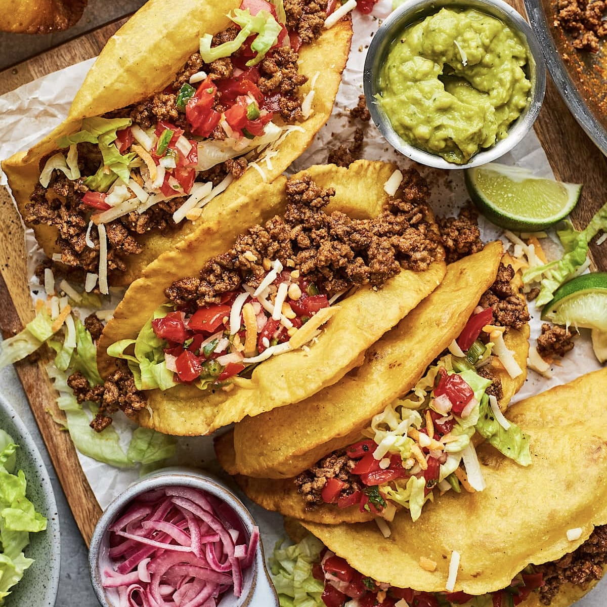

Your recipes
Tacos
Ingredients
- Ground beef
- Taco sauce
- El Paso taco seasoning
- Onions
- Hard or soft shell tacos
- Salt and pepper
- Cumin
- Garlic
- Any additional taco topings such as:
- Diced tomatoes
- Cilantro
- Guacamole
- Shredded or melted cheese
Instructions
- Cook ground beef and chopped onions in a skillet on medium heat
- Crumble up ground beef with cooking spoon
- Drain off grease from pan
- Add packet of El Paso taco seasoning
- Add your choice of taco sauce
- Add cumin and garlic to your liking
- Heat hard or soft taco shells in oven wrapped in tin foil to your liking
- Enjoy!
